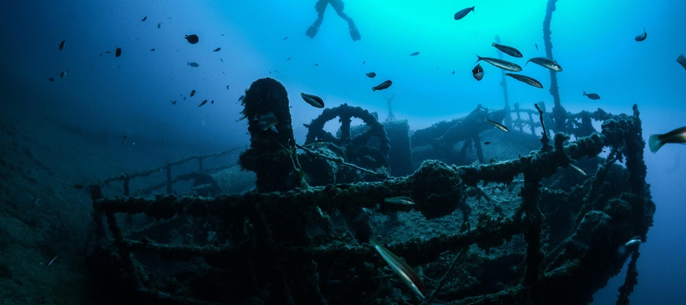

10–33 m · za početnike
Teti
Teti leži uz otočić Mali Barjak i zbog male dubine i očuvanosti idealna je lokacija, osobito za početnike. Bio je čelični parobrod s dva teretna skladišta i dva jarbola, sa strojem na sredini broda i niskim nadgrađem s drvenim zapovjedničkim mostom.
Prvi dijelovi pramčane oplate počinju na desetak metara dubine sa sjeverne strane Malog Barjaka. Ostaci leže na blagoj kosini koja se spušta do oko 35 metara, a dublji dio olupine potpuno je očuvan.
- Tipteretni parobrod
- Uzrokudar u obalu
- ZastavaItalija
- Dimenzije72 × 8 m